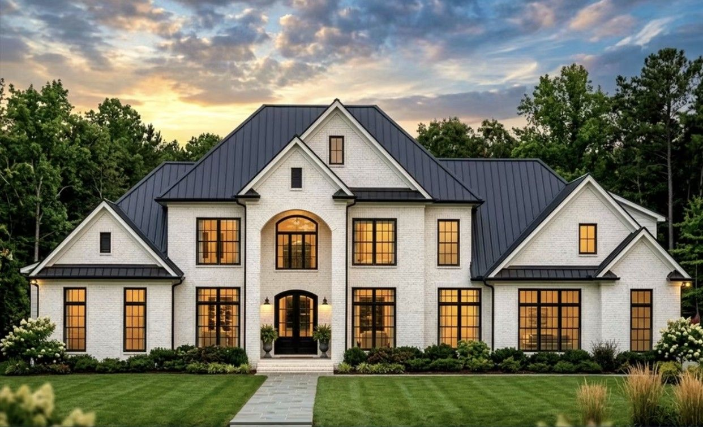
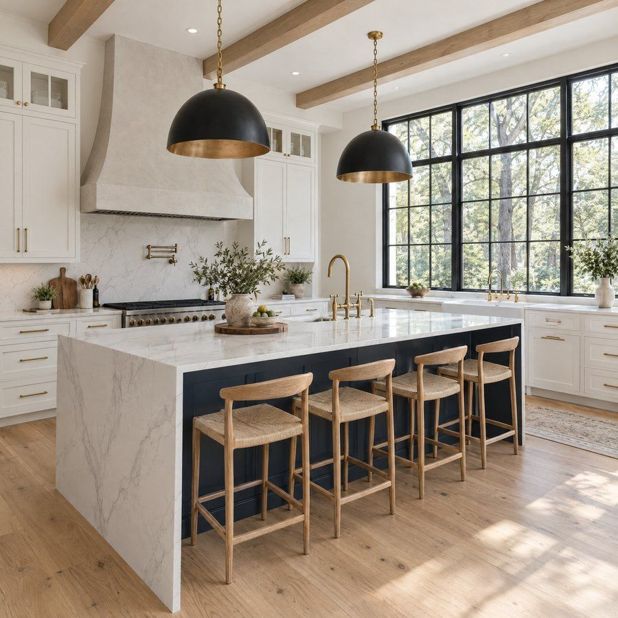
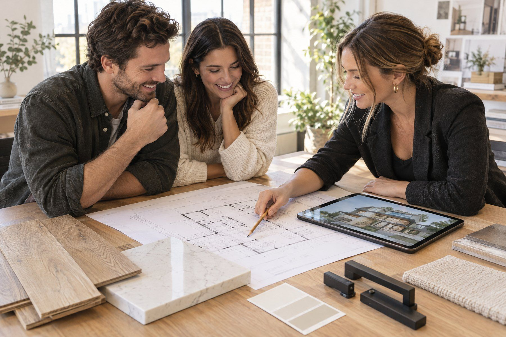
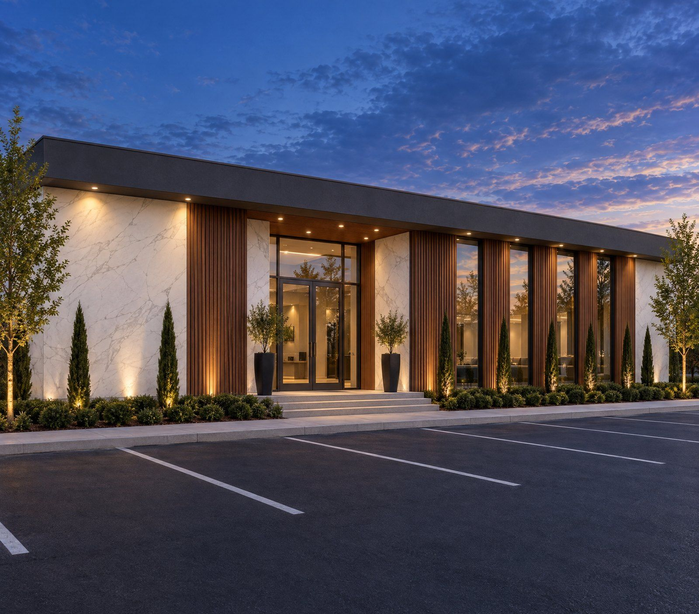
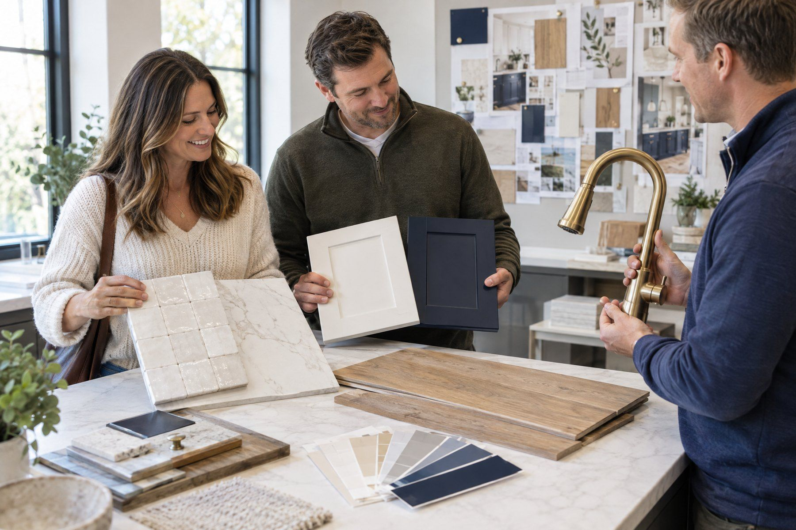
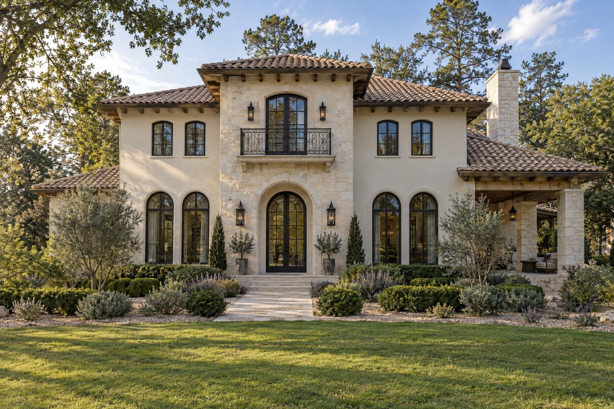

Spaces that inspire.
The first impression matters. So does every detail beyond it. We bring proportion, light, texture, and architectural character together to create spaces you never tire of coming home to.
Keystone Constructions | The Shoals & North Alabama
Spaces that take your breath away. Details that feel unmistakably yours. And a building experience that makes bringing it all to life something to look forward to.
Introduction
The beautiful ones catch your eye. The truly special ones seem to understand you: the way you move through your day, gather with people you love, and make room for what matters. At Keystone, we bring that feeling to life through inspired design, thoughtful planning, and a building journey that feels personal from the very beginning.
The Keystone difference

The first impression matters. So does every detail beyond it. We bring proportion, light, texture, and architectural character together to create spaces you never tire of coming home to.

A beautiful space should make everyday life better. From the way rooms connect to the details you reach for every day, we shape the design around your preferences, routines, and what feels right to you.

This is your project, and you should feel part of it. With collaborative decisions, clear communication, and meaningful milestones, we make the experience of creating your space something you truly enjoy along the way.
Selected work
From welcoming homes to thoughtfully planned workplaces, explore how individual ideas become places people love spending time in.

Experience
There is a special kind of excitement in seeing a place you imagined begin to take shape. We make room for that feeling, with conversations that invite your ideas, decisions that make sense, and moments along the way that are worth celebrating. You stay connected to the process, not just the final reveal.

The journey
You’re heard. Your ideas have a place to begin.
You can start to see it, and it feels right.
The choices feel personal, informed, and exciting.
You’re involved, informed, and part of the moment.
You love the space, and the story of how it came to be.
Homesites
Already have a lot? Wonderful, we will start there. Still looking? We will help you find the right one, or offer a homesite of our own in select neighborhoods such as The Grove in Florence. Tell us where you would love to live, and we will take it from there.
See The Grove
In their words
We walked into our finished home and my wife cried. Every room was exactly what we had talked about at that first meeting on the lot, and a few things were better than we imagined. The build itself was the surprise: we got pictures every week, we walked the house at every stage, and we never once wondered what was going on. We loved the house before it was done, and we love it more now.
Final invitation
Whether you have plans in hand or only the beginnings of an idea, we would love to hear what you are imagining.